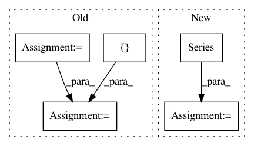

3cb6ee8f93b805d0cf8f7896b455e57632de9840,pandas/tests/series/test_dtypes.py,TestSeriesDtypes,test_astype_categorical_to_other,#TestSeriesDtypes#,55
Before Change
def test_astype_categorical_to_other(self):
value = np.random.RandomState(0).randint(0, 10000, 100)
df = DataFrame({"value": value})
labels = [f"{i} - {i + 499}" for i in range(0, 10000, 500)]
cat_labels = Categorical(labels, labels)
df = df.sort_values(by=["value"], ascending=True)
df["value_group"] = pd.cut(
df.value, range(0, 10500, 500), right=False, labels=cat_labels
)
s = df["value_group"]
expected = s
tm.assert_series_equal(s.astype("category"), expected)
tm.assert_series_equal(s.astype(CategoricalDtype()), expected)
msg = r"could not convert string to float|invalid literal for float\(\)"
After Change
def test_astype_categorical_to_other(self):
cat = Categorical([f"{i} - {i + 499}" for i in range(0, 10000, 500)])
ser = Series(np.random.RandomState(0).randint(0, 10000, 100)).sort_values()
ser = pd.cut(ser, range(0, 10500, 500), right=False, labels=cat)
expected = ser
tm.assert_series_equal(ser.astype("category"), expected)
tm.assert_series_equal(ser.astype(CategoricalDtype()), expected)
msg = r"could not convert string to float|invalid literal for float\(\)"
with pytest.raises(ValueError, match=msg):
ser.astype("float64")
cat = Series(Categorical(["a", "b", "b", "a", "a", "c", "c", "c"]))
exp = Series(["a", "b", "b", "a", "a", "c", "c", "c"])
tm.assert_series_equal(cat.astype("str"), exp)
s2 = Series(Categorical(["1", "2", "3", "4"]))
exp2 = Series([1, 2, 3, 4]).astype(int)
tm.assert_series_equal(s2.astype("int"), exp2)
// object don"t sort correctly, so just compare that we have the same
// values
def cmp(a, b):
tm.assert_almost_equal(np.sort(np.unique(a)), np.sort(np.unique(b)))
expected = Series(np.array(ser.values), name="value_group")
cmp(ser.astype("object"), expected)
cmp(ser.astype(np.object_), expected)
// array conversion
tm.assert_almost_equal(np.array(ser), np.array(ser.values))
tm.assert_series_equal(ser.astype("category"), ser)
tm.assert_series_equal(ser.astype(CategoricalDtype()), ser)
roundtrip_expected = ser.cat.set_categories(
ser.cat.categories.sort_values()
).cat.remove_unused_categories()
result = ser.astype("object").astype("category")
tm.assert_series_equal(result, roundtrip_expected)
result = ser.astype("object").astype(CategoricalDtype())
tm.assert_series_equal(result, roundtrip_expected)
def test_astype_categorical_invalid_conversions(self):
// invalid conversion (these are NOT a dtype)
In pattern: SUPERPATTERN
Frequency: 3
Non-data size: 5
Instances
Project Name: pandas-dev/pandas
Commit Name: 3cb6ee8f93b805d0cf8f7896b455e57632de9840
Time: 2020-11-12
Author: jbrockmendel@gmail.com
File Name: pandas/tests/series/test_dtypes.py
Class Name: TestSeriesDtypes
Method Name: test_astype_categorical_to_other
Project Name: bashtage/linearmodels
Commit Name: 34e7e918bd4fc09f643e8bb448e875a9bcb7e841
Time: 2017-03-29
Author: kevin.k.sheppard@gmail.com
File Name: experiment.py
Class Name:
Method Name:
Project Name: sassoftware/python-dlpy
Commit Name: d04b0d52e8789d32d71c099e904a0617756884ac
Time: 2019-09-17
Author: Xiangqian.Hu@SAS.COM
File Name: dlpy/metrics.py
Class Name:
Method Name: accuracy_score